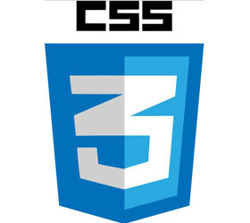
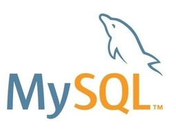

Etude et réalisation des applications desktop, mobile et web
Gestion des projets et des équipes de développement
Formations utilisateurs
Avant-vente
Technologies : C# .Net, Php, iOS, Android
2008
Vacataire Cours et TP interfaces homme-machine
5ème année Ingénieur Polytech Tours informatique
2007 → 2008
Moniteur - Enseignant chercheur
Centre d'Initiation à l'Enseignement Supérieur (C.I.E.S) Centre, Université de Tours, Polytech Tours.
Cours d'algorithmique & réseaux avancés
Gestion et encadrement de projets étudiants ingénieurs
2007 (3 mois)
Stage Analyste concepteur
Laboratoire d'informatique de Tours (37)
Etude et développement de méthodes de visualisations et d'interactions pour les cubes de données
Technologies : Java, Java3D
2006 (3 mois)
Stage Analyste développeur
CHRU Bretonneau à Tours (37)
Etude et développement d'une application de transfert d'images médicales recherches
Technologies : C, Java
Formation
2007 → 2009
Doctorat - Moniteur
Laboratoire d'Informatique de l'Université François Rabelais de Tours (EA2101)
Sujet de thèse : Méthodes de visualisations et d'interactions en 3D et réalité virtuelle pour les entrepots de données
et l'analyse en ligne
2007
Diplôme d'Ingénieur - Spécialité Informatique - Option Techniques avancées pour le Web
Ecole Polytechnique de l'Université François Rabelais de Tours (37)
2007
Master 2 Recherche - Informatique
Ecole Polytechnique de l'Université François Rabelais de Tours (37)
2004
BTS Informatique et Réseaux des Industries et des Services techniques
Lycée Henri Brisson, Vierzon (18)
2002
BAC STI Génie Electrotechnique - Mention bien
Lycée Henri Brisson, Vierzon (18)
Compétences
Développement Desktop
.Net 4.5
C#
WPF
WCF
C++ Qt
Java
Développement Web
HTML
CSS

JS - JQuery
PHP - Symfony
Bases de données
SQLServeur
MySQL

PostGreSQL
Langues
Maternelle
Courant
Conférences et publications internationales
October. 2009
Visual Mining of Web Logs with DataTube2.
F. Sureau, F. Plantard, F. Bouali, G. Venturini
Web Information Systems Engineering - WISE 2009 10th International Conference (555-562)
Poznań, Poland
June. 2008
On Improving OLAP Visualizations with Rearrangement Clustering.
F. Sureau, F. Bouali, G. Venturini
First Joint Meeting of the Société Francophone de Classification and the Classification and Data Analysis Group of the
Italian Statistical Soc. (SFC- CLADAG '08) (417-420)
Caserta, Italia
Conférences et publications nationales
Juin. 2009
Optimisation heuristique et génétique de visualisations 2D et 3D dans OLAP: premiers résultats.
F. Sureau, F. Bouali, G. Venturini
5émes Journées francophones sur les Entrepôts de Données et l’Analyse en ligne (EDA, 62-75)
Montpellier, France
Mai. 2008
DataTube2 : un outil d'analyse de logs en réalité virtuelle.
F. Sureau, F. Bouali, G. Venturini
Conférence INFORSID, atelier Intégration, interrogation et analyse de Logs (INFORSID)
Fontainebleau, France
Janvier. 2008
DataTube2 : exploration interactive de données temporelles en réalité virtuelle.
F. Sureau, F. Bouali, G. Venturini
8èmes Journées Francophones, Extraction et Gestion des Connaissances, Sophia Antipolis (EGC, 13-17)